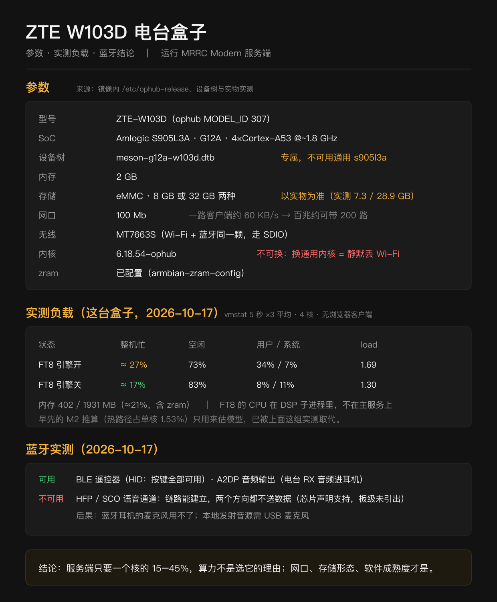

拿到盒子之后：发货版盒子用户指南（W102D / W105D）
这台盒子的系统已经写进 eMMC，口令、时区、Wi-Fi 卖家都替你设好了。插电、用浏览器登录，就能开始干活——不需要 U 盘，不需要显示器，也不需要键盘。
想自己从镜像刷，看 从零刷机的完整指南。那是另一条路线，从这里上手不必读。
---
1. 你拿到的是什么
| 项 | 说明 |
|---|---|
| 主机 | 中兴云电脑 W102D / W105D（Amlogic S905L3A，4×Cortex-A53，2 GB 内存，eMMC 8 GB） |
| 系统 | MRRC Modern 1.28.1，已固化进 eMMC |
| 网口 | 机身自带 RJ45，100M 有线（箱里不带 USB 网卡——那是卖家刷机用的工具，不是配件） |
| 无线 | MT7663S，只支持 2.4 GHz（原因见 §10） |
| 它能做的事 | 把电台的频率、模式、滤波、功率，收发音频和频谱瀑布搬到浏览器和手机上；局域网里直接用，也可以申请一个公网入口从外面用 |
盒子里没有电台、天线、馈线和网线，也不带 USB 网卡；有这些需要的话自己备。机身自带 RJ45，一根普通网线就能连。随附的电源适配器直接用就行。
关于型号：W102D、W103D、W105D 是同一个家族（同一颗 S905L3A、同一套板级补丁）， 固件通用，本机烧的是按 W103D 板型（MODEL_ID=307/meson-g12a-w103d.dtb）编的那一套。 所以你会在文档、日志、镜像文件名里反复看到 "W103D" —— 指固件家族，不是说外壳上那个型号。
---
2. 出厂已经设好的东西
| 项 | 出厂值 | 怎么改 |
|---|---|---|
SSH 用户 root | abcd1234 | 设置页「系统账号口令」，或 SSH/HDMI 里 passwd root |
系统用户 mrrc | abcd!1234 | 设置页「系统账号口令」，或 passwd mrrc |
| 网页登录口令 | abcd!1234 | 界面 ☰ →「设置」→「登录口令」 |
| 时区 / 语言 | Asia/Shanghai / zh_CN.UTF-8 | 设置页「盒子身份」 |
| Wi-Fi | 按你提供的名称和密码预置好了（2.4 GHz；隐藏网络也认） | 设置页「Wi-Fi」 |
| 天调 ATR-1000 | 存了一条它的热点配置，但不会自动连（一块无线只能顾一头） | — |
| 电台型号 / 串口 | 没有预置，插上电台再选一次 | 界面 ☰ →「连接设置」 |
| 救急 Wi-Fi | 预置了 rescue / abcd1234（见 §9.10） | 设置页「Wi-Fi」里可以直接改 |
| 主机名 | MRRC-Modern | 设置页「盒子身份」 |
| HTTPS 证书 | 自签，首启动时在这台机器上生成 | 不用改，浏览器会警告一次 |
⚠️ 三条固定口令是同一批盒子共用的公开值。 拿到其中任意一台，就知道整批的口令。登录之后第一件事就是把三条都换掉——设置页里就能改：网页那条在「登录口令」，root 与 mrrc 在「系统账号口令」。
---
3. 第一次通电
- 路由器后台的 DHCP 客户端列表里找主机名 MRRC-Modern； - 接上 HDMI 和键盘，登录后敲 ip -4 addr； - 在同一个路由器的电脑上试 https://MRRC-Modern:8888（有的路由器不做这个名字解析，那就用前两个办法）。
- 接电。 Wi-Fi 已经代配好了，网线可以不插；想更稳就插上——有线优先，音频延迟也更低。
- 等一分钟。 盒子自己连 Wi-Fi、起服务，全程不需要人管。
- 找到它的地址。 三个办法任选一个：
---
4. 打开网页，改口令
浏览器访问 https://<盒子地址>:8888。
第一次会弹「证书不安全」。 这是自签证书的正常现象：盒子的证书是它自己签的，没有交给任何一家 CA。点「高级」→「继续前往」，以后就记住了。用 abcd!1234 登录，然后进 ☰ →「设置」→「登录口令」把它改掉。
---
5. 管 Wi-Fi
设置页的 Wi-Fi 区不只是一次性的「连一下」，它是一张网络清单：
| 想做什么 | 怎么做 |
|---|---|
| 提前存一个网（现在还连不上也行） | 填 SSID 与密码 → 点「仅保存（不切换）」。它会被存下来并保持「自动连接」，等这个网络出现时自己连上去 |
| 换某个网的密码 | 已保存列表里点「改密码」→ 表单会带入 SSID → 输新密码 → 再点「仅保存（不切换）」 |
| 暂时不用某个网 | 点该行「自动连接：开/关」 |
| 删掉一个网 | 点该行「忘记」 |
几点说明：
这时页面报的是绿字「已保存」，不是失败；
- 「连接并切换」会立刻切过去。这个网不在范围内时，二十五秒后回落，但配置照样存下来了——
- 盒子只支持 2.4 GHz，5 GHz 的网存了也连不上；
- 每个已保存的网都带着明文密码，所以别在别人家的盒子上留自己的网——不用的就「忘记」；
- 「自动连接」关掉只是不主动连，手动点「连接并切换」仍然能用。
5.1 顺手给盒子起个名字
设置页 →「盒子身份」→ 改名字。名字决定两件事：局域网里的 mDNS 地址（<名字>.local），以及以后申请公网入口时的实例名。
两台同名的盒子放在同一个网络里会互相打架，所以每台都该有自己的名字，一般就用呼号。
6. 接电台
一根 USB 线就够：CAT 控制和收发音频都走它。
| 电台 | 怎么插 |
|---|---|
| Yaesu FT-710 | 机身上方那个 Enhanced 口。插 Standard 口可能只有控制、没有真频谱 |
| Icom IC-7300 / IC-7300MK2 | 任意 USB 口（CI-V 与声卡同一条线） |
| 其它型号 | 见 §10.4，其中 8 个是实验性机型，默认只收不发 |
插好后在界面 ☰ →「连接设置」里选电台型号和串口，保存。服务会自己重启一次。
这一步是真的往串口发包问电台，所以电台要开着、USB 要连着，否则问不出结果。
---
7. 五分钟验收
| 看什么 | 应该是什么样 |
|---|---|
| 频率 | 界面数字跟着电台面板走；拨一下面板，界面一秒内跟上 |
| 频谱 | 瀑布有噪声纹理，不是一条光滑的假曲线（假曲线 = 没接上真频谱，见 §10.5） |
| S 表 | 有信号时指针会动 |
| 声音 | 点开 RX 音频，能听到电台底噪 |
| 发射 | 先短按一下 PTT（三秒以内），确认功率表有指示，再正常用 |
---
8. 手机上用
手机连同一个路由器（或同一个 Wi-Fi），浏览器打开同一个地址即可。界面是按手机做的，横屏更舒服。 iPhone 和 Android 都能「添加到主屏幕」，用起来和 App 差不多。盒子功耗低、不发热，可以常年不关。要重启就用设置页的「重启」，别直接拔电。
---
9. 出问题怎么办
先换一个浏览器，或者换一台设备再试。 一半的「打不开」是浏览器缓存或代理造成的，不在盒子上。
| 现象 | 最可能的原因 | 怎么办 |
|---|---|---|
| 找不到盒子的地址 | 路由器换了网段，或 Wi-Fi 没连上 | 插网线（最省事）；或 §9.10 的手机热点；或接 HDMI 敲 ip -4 addr |
| Wi-Fi 连不上 | 你家 Wi-Fi 只有 5 GHz、密码改过、名字变了 | 插网线进设置页 →「Wi-Fi」重填（只支持 2.4 GHz）；没有网线就用 §9.10 的手机热点 |
| 网页打不开，但能 ping 通 | 用了 http:// | 必须写 https://…:8888 |
| 证书警告 | 自签证书 | 「高级」→「继续前往」，一次即可 |
| 登录说口令错 | 口令被改过 | SSH 进去敲 mrrc-show-password，看当前网页口令 |
| 电台没反应 | 线、电源、串口 | 见 §10.4 |
| 有频谱，却是光滑的假曲线 | FT-710 插错口 | 换到 Enhanced 口，见 §10.5 |
| 没有声音 | 音量、声卡，或浏览器拦了自动播放 | 见 §10.6 |
| PTT 按下去没反应 | 机型在 8 个实验性之列 | 见 §10.7 |
| 时间不对 | 没联网，NTP 没同步 | 联网后一分钟内自愈，timedatectl 看 synchronized: yes |
| 忘了 root 口令 | — | 只能重刷（找卖家），或者接 HDMI 进单用户模式改——所以第一件事就改掉并记住 |
9.4 电台没反应
SSH 进去看三样东西在不在（缺一样就是缺一样的功能）：
ls /dev/ttyUSB* /dev/ttyACM* # 控制串口
arecord -l # 电台的 USB 声卡（RX）
aplay -l # 播放设备（TX）三样都没有：换一根 USB 线、确认电台是开着的、换一个 USB 口。只有串口没有声卡：多半是插错了口（FT-710 用 Enhanced），或者电台菜单里 USB 音频被关掉了。选完机型后如果串口还是空，mrrc-radio show 看一眼当前生效的配置，mrrc-radio use <型号> 可以重选。
9.5 频谱是一条光滑的假曲线
那说明频谱走的是 S 表合成的回退路径，不是真数据。FT-710 最常见的原因是插在 Standard 口—— 换到上方的 Enhanced 口，它同时承载 CAT 和频谱。Icom 机型则由 CI-V 的 0x27 送频谱，不需要额外的线；如果仍是假曲线，看一眼设置页的「盒子系统」有没有报错。
9.6 没有声音
MRRC_AUDIO_RX_DEVICE / MRRC_AUDIO_TX_DEVICE，把它们清空让程序自己找。
- 浏览器先拦住自动播放是常态：先在页面上点一下，再开音频；
- 手机的话，检查是不是开了静音开关；
- 盒子侧确认声卡选对了——
arecord -l里应该能看到电台的 USB 声卡； - 实在不行在 SSH 里看
/opt/mrrc_modern/env/mrrc.env的两行设备名：
9.7 PTT 按下去没反应
MRRC 支持十一个型号，但只有三个是逐条真机验证过的：ft710、ic7300、ic7300mk2。其余八个（ic705 ic7610 ic7760 ftdx10 ftdx101d ftdx101mp ftx1 ft891）的指令来自 设备手册和 Hamlib，没有实测，默认只收不发。要在这八个上发射，得显式开门：
vi /opt/mrrc_modern/env/mrrc.env # 加一行 MRRC_ALLOW_UNVERIFIED_TX=1
systemctl restart mrrc-modern在没验证过的语义上按键，对电台和天线都不算友好，所以这条默认是关的。
9.8 把问题交出去
界面右下角（☰ 菜单里）有一个 「🐞 遇到问题」 页面：填一句现象，点「生成诊断包」，它会自动收集日志、配置（口令已打码）和版本号，然后上传给维护者。不想上传也行，可以只保存到本地再自己发出去。
9.9 回到出厂状态
两件事别混：
- 只想清掉配错的网络/口令：在设置页里改回去就行，不用重刷。
- 想要一台干净的盒子：重刷镜像（找卖家，或者按 完整指南 自己刷）。注意重刷会把盒子上的录音和配置一起清掉，先备份。
---
9.10 盒子连不上任何网络了
这是唯一需要"在外面救"的情形。盒子出厂时预置了一条救急 Wi-Fi：
| 热点名（SSID） | rescue |
| 密码 | abcd1234 |
做法：用手机开一个个人热点，把热点名改成 rescue、密码设成 abcd1234，然后让盒子断电重开。几十秒内它会自己连上你的手机（这条 profile 的优先级是 -10，只在你别的网都不通时才用）。然后在手机上看热点里的已连设备，找到盒子的地址，用浏览器打开 https://<那个地址>:8888；忘了网页口令就 SSH（root / mrrc）进去跑 mrrc-show-password。
热点名和密码必须一字不差，错了就连不上。手机热点一般只发 2.4 GHz，正好对上。
9.11 改 root / mrrc 的口令
设置页 →「系统账号口令」，选账号、输两遍、保存即可（不用 SSH）。改完立刻生效。改了又忘、连 SSH 也进不去，就只能重刷或寄回。
9.12 用蓝牙遥控器操作电台
完整的按键表、配对失败的排查步骤和换遥控器的方法，见 遥控器指南。
盒子接上一支蓝牙遥控器（实测：中国移动的语音遥控器 CMCC_Voice_Remote）， 人站在盒子旁边就能调频、切模式、按住语音键发射，不用开手机或电脑。
配对（一次性，全在网页上）
- 打开
/settings页面，找到「遥控器」； - 让遥控器进入配对模式：同时长按「OK + 返回」约 5 秒，指示灯快闪；
- 点「搜索附近的遥控器」（约 12 秒），列表里出现
CMCC_Voice_Remote后点「配对」。
配对成功时页面显示 「已配对，按键可用 ✓」。看到这一句就可以用了：按一下遥控器的 方向键，电台的频率会跟着动。
页面说「已配对，但按键还没反应」怎么办？ 点旁边的「重配」按钮，它会清掉旧配对 并给蓝牙控制器上下电；等提示出来，让遥控器重新进入配对模式，再点一次「配对」。
这一句判据不是随便写的：蓝牙这里有个坑，「配对成功」不等于「能用」——旧配对密钥会让 链路停在未加密状态，遥控器于是拒绝一切属性读写，系统建不出键盘设备，按什么键都没有反应。 页面判断的是「有没有真的建成键盘设备」，所以它说可用就是可用。
（另一半：如果换了一支遥控器，它的按键对不上，见 遥控器指南 §6。）
按键
| 键 | 作用 |
|---|---|
| 语音（按住） | 发射，松开即停 |
| ▲ / ▼ | 频率 ± 当前步进 |
| ◀ / ▶ | 步进档（100 Hz … 100 kHz） |
| 频道 + / − | 波段上下 |
| 数字 0–9 → 确定 | 直接输入频率（kHz，例如 7 0 5 0 = 7.050 MHz、1 4 0 7 0 = 14.070 MHz） |
| 设置 | 模式循环 |
| 返回 | 取消半途的数字输入 |
| 音量 + / − | 电台 AF 增益，每次 5 %（20 下到满格） |
| 电源 | 留给本地控制（不再关盒子） |
电视 键不发蓝牙 —— 那类按键只发红外去控电视，盒子收不到。
看不到按键时
按顺序查：bluetoothctl info <地址> 是否 Paired: yes；journalctl -u bluetooth -n 40 里有没有 unlikely error（有 ⇒ 回到配对那一节重配）； systemctl status mrrc-localctl 与 journalctl -u mrrc-localctl 是否在跑。 power 键如果仍然关机，说明服务层的 HandlePowerKey=ignore 没生效 （grep HandlePowerKey /etc/systemd/logind.conf）。
10. 三条红线
的公网入口（☰ →「公网入口」），它是一条出站隧道，不开放任何入站端口。
- 只用 2.4 GHz。 这块无线网卡连 5 GHz 会「关联成功但数据不通」，一百秒后连扫描都失效，只能重启。路由器的双频合并（同一个名字）会踩这个坑，建议把 2.4 G 和 5 G 分开命名。
- 别把 8888 端口直接映射到公网。 那是一条明文暴露的控制入口。要在外面用，走 Cloud Hub
- PTT 按下去是真发射。 天线或假负载接好再按；发射时长上限默认 120 秒，是保护不是限制。
---
11. 想再往前一步
| 想要 | 怎么做 |
|---|---|
| 在外面也能用 | ☰ →「公网入口」，填呼号申请，维护者批准后自动接通 |
| 给朋友一个只能听的入口 | SSH 里写 MRRC_LISTEN_PASSWORD，之后开 /listen |
| 录一段通联 | ☰ →「录音」，服务端直接存 MP3 |
| 接天调 ATR-1000 | 设置页「Wi-Fi」里连它自己的热点（连上之后盒子没有外网，是正常的） |
| 换电台型号 | ☰ →「连接设置」，或 SSH 里 mrrc-radio use <型号> |
| 升级系统 | SSH 里 mrrc-update（不重刷镜像），或找卖家要新镜像 |
| 看系统状态 | 设置页「网络体检」「盒子系统」，或 SSH 里 systemctl status mrrc-modern — |